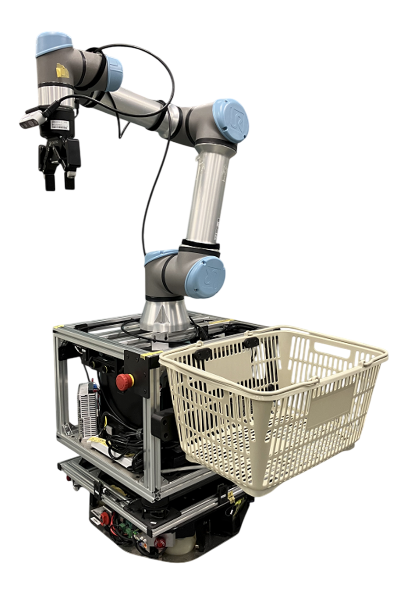

Autonomous Mobile Manipulator Integration (AIST, Japan)¶
{kind=link}
Professional System Integration | Integrated Research Center for Advanced Manufacturing (IRCAM)
National Institute of Advanced Industrial Science and Technology (AIST), Tokyo, Japan
Project Summary¶
Designed and implemented a comprehensive integration system for autonomous mobile manipulators, combining vision, navigation, and manipulation capabilities for advanced research applications. The project focused on creating a unified ROS2-based platform that enables seamless coordination between multiple robotic subsystems.
Key Achievements¶
✅ Full System Integration: Successfully integrated multiple robotic components into a cohesive autonomous system
✅ Advanced Autonomy: Implemented autonomous pick-and-place operations with real-time navigation
✅ Research Impact: Contributed to cutting-edge robotics research at Japan’s premier industrial research institute
✅ Production-Ready: Delivered containerized, documented system ready for research deployment
Technical Stack¶
- Hardware Components:
UR5e Robotic Arm - 6-DOF collaborative robot for precision manipulation
TriOrb Mobile Base - Omnidirectional mobile platform for navigation
Intel RealSense D435i - RGB-D camera for visual perception
Robotiq 2F-85 Gripper - Adaptive gripper for object manipulation
RPLidar A1M8 - 360° laser scanner for SLAM and obstacle detection
- Software Architecture:
ROS2 Humble - Core robotics middleware with custom integration wrappers
MoveIt2 - Motion planning and manipulation framework
Navigation2 - Autonomous navigation stack
SLAM Toolbox - Simultaneous localization and mapping
PCL & OpenCV - Point cloud processing and computer vision
Docker - Containerized deployment and environment management
- Development & Documentation:
Custom server nodes for system orchestration and control
Comprehensive documentation using Sphinx and Doxygen
Modular architecture for research flexibility
Core Capabilities¶
- Autonomous Navigation
Complete mapping and path planning in dynamic environments
- Precision Manipulation
Object detection, grasping, and placement with sub-centimeter accuracy
- Visual Perception
Real-time object recognition and 3D scene understanding
- System Integration
Seamless coordination between mobile base and robotic arm
Impact & Applications¶
This integration enables researchers to:
Conduct advanced human-robot interaction studies
Develop and test autonomous manufacturing processes
Advance mobile manipulation algorithms in real-world scenarios
Accelerate robotics research through a ready-to-use platform